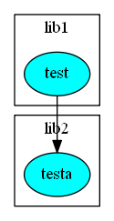
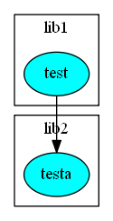

In larger workspaces it’s often hard to understand the dependency structure. With bake you can generate a dot file (see http://www.graphviz.org):
bake ... --dot [<dot filename>]
If filename is omitted, a file <main config name>.dot in main project dir is created. The dot file is a text file with all dependencies included. It is easy to render an image, e.g. with
tred <dot filename> | dot -Tpng -o <png image filename>

It’s possible to generate only a part of the whole graph with -p (same as for building only a part of the code). e.g.:
bake ... --dot <dot filename> -p lib2
bake ... --dot <dot filename> -p lib2,testa
Which results in:
 

With –dot-project-level the depenencies are written on project level, not on config level.